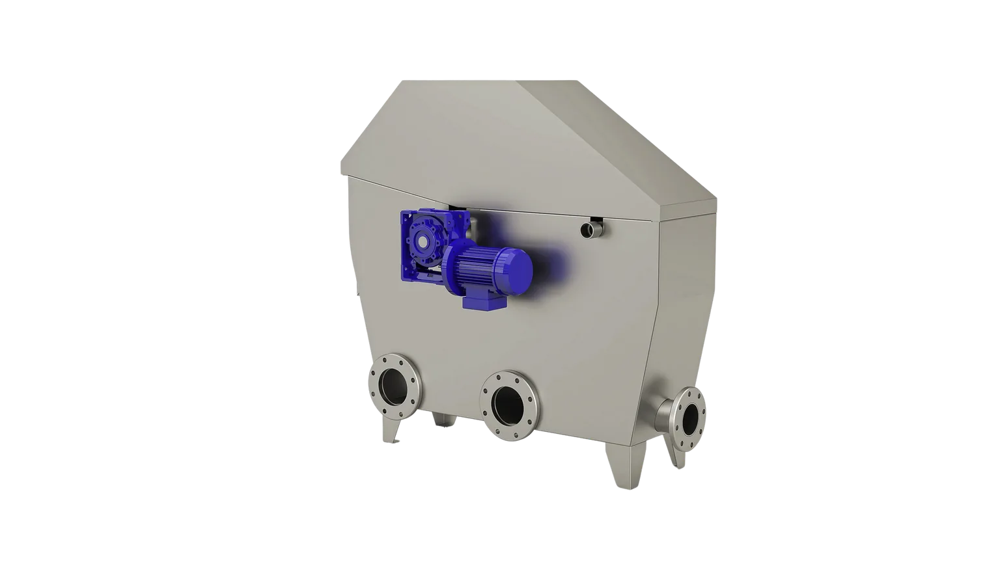
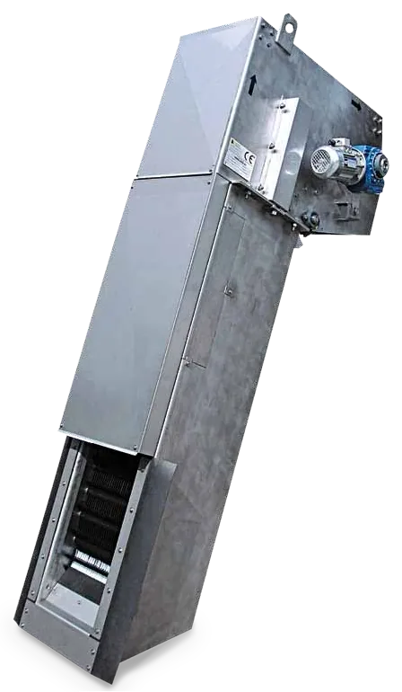
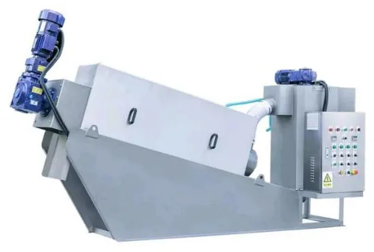
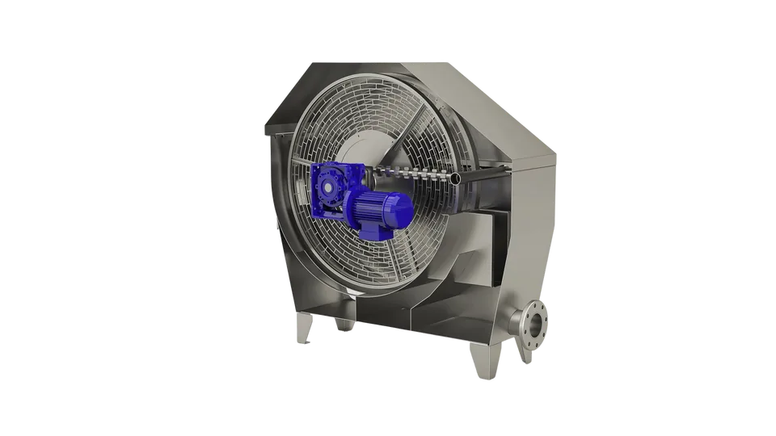
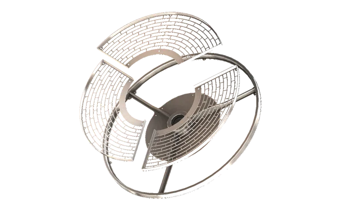
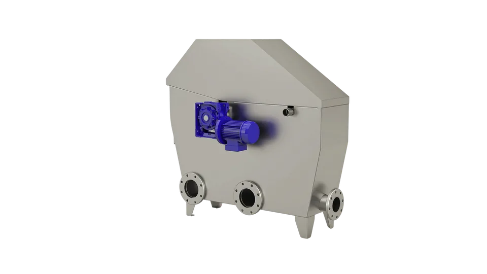
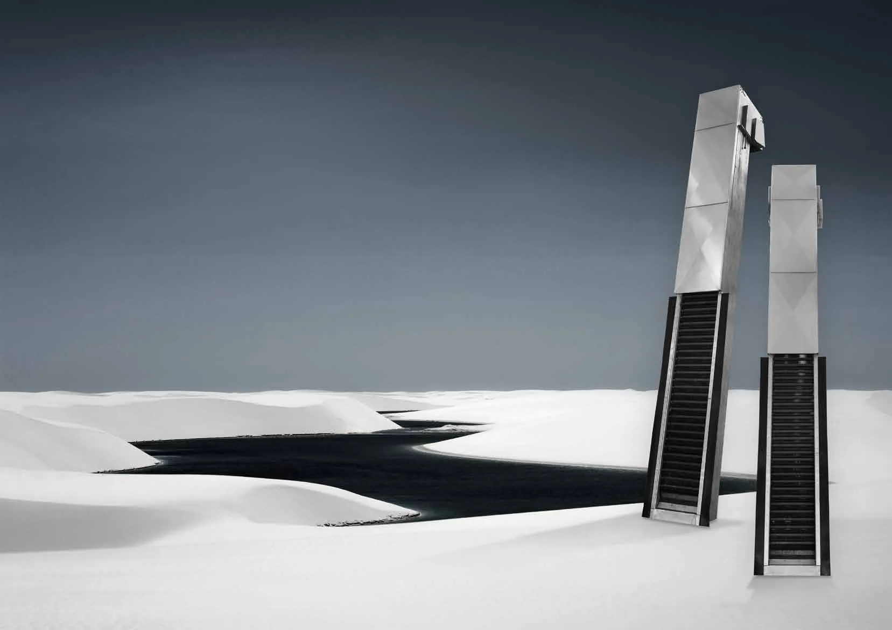
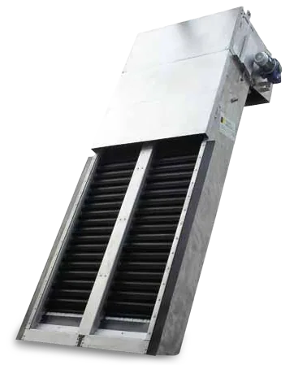

A rotary disc filter built for the tannery. Connected to the drums, the GreenDisc continuously filters tanning baths — separating fibres, removing dust and shaving residues and dewatering sludge, all with self-cleaning discs and quick-change meshes.

Kymera covers the full filtration line — from coarse screening at the channel, through continuous bath filtration, to final sludge dewatering. Pick the stage you need.
Rotary disc screen for continuous in-line filtration of tanning baths — fibre separation and sludge dewatering.
Explore →
In-channel self-cleaning bar screen that holds back the coarse solids in civil and industrial wastewater.
Explore →
Compact continuous screw press that dewaters sludge in-line — low energy, low chemicals, self-cleaning.
Explore →The GreenDisc is a disc filter — a machine for the filtration of solids that is particularly suited to separating fibres and dewatering sludge. It was developed specifically for the tannery industry.
Applied to the drums, it filters the tanning baths in continuous operation, removing the solid residues, the dust and the shaving residues that would otherwise overload downstream treatment and waste valuable bath water.

The effluent enters the feeding compartment and flows into the space between the filtering discs.
It passes through the mesh into the discharge compartment, while the solids stay on the disc's filtering surface.
As solids build up they agglomerate and, with the discs rotating, scrape along the surface — a continuous self-cleaning effect.
Once retained solids exceed a set volume the machine discharges them automatically; counter-wash nozzles keep the meshes clean.

The meshes are split into three 120° segments and can be removed individually — without taking the disc off the machine — for fast, low-cost maintenance.
The disc gaskets use the same rapid-change system, cutting downtime when seals need replacing.
The tank is engineered so that, if a gasket fails, dirty water cannot reach the clean water — protecting the filtrate.
Built in AISI 304 or AISI 316 to suit your process, with the filtration mesh aperture chosen to match your requirements. Certified to Machinery Directive 2006/42/EC.
| Flow rate | 8 m³ / hour |
| Dimensions (W×D×H) | 1350 × 660 × 1250 mm |
| Construction | AISI 304 / AISI 316 |
| Mesh aperture | On request |
| Certification | CE 2006/42/EC |

| Flow rate | 15 m³ / hour |
| Dimensions (W×D×H) | 1450 × 660 × 1350 mm |
| Construction | AISI 304 / AISI 316 |
| Mesh aperture | On request |
| Certification | CE 2006/42/EC |
Continuous in-line filtration of the tanning liquors circulating to and from the drums.
Separates leather fibres carried in the baths, protecting pumps, pipework and treatment plant.
Dewaters the separated solids, reducing the volume and weight of sludge sent for disposal.
Removes shaving residues and dust released during processing before they reach the next stage.
Cleaner bath water can be recovered and recirculated, lowering water and chemical consumption.
Lightens the load on downstream purification so discharge stays within environmental limits.

A second filtration principle for the heavy end of the process: an in-channel, self-cleaning belt screen that holds back the coarse solids from civil and industrial wastewater before they reach finer filtration or downstream treatment.
The belt screen is a self-cleaning bar screen designed for installation directly in the channel. It retains the coarse solids carried by water from intakes, civil treatment plants and industrial sewage systems.
It stops the bulky waste that cannot be discharged downstream — material that would otherwise foul the finer filtration stages or damage the components of the treatment plant further along the line.
Water flows through the inclined belt of acetal-resin filtering elements, which capture the coarse solids on the surface.
The moving belt drags the retained solids up and out of the liquid surface, carrying them toward the discharge chute.
The elements clean each other as the belt advances, and a rotating brush turning against the belt completes the cleaning.
Reversing the belt direction releases the solids into a fully closed hopper, feeding a collection tank or compaction system.

The filtering elements are shaped acetal resin — highly resistant mechanically and chemically, non-photosensitive, and able to work at both high and low temperatures.
A chain-and-sprocket take-off from the belt drive shaft spins the counter-rotating cleaning brush — no extra gearmotor, so the machine saves energy.
A single belt handles channels up to 1200 mm; for wider channels two units pair on one central support, reaching up to 2500 mm.
The belt is tensioned by trapezoidal-thread screws on slides while the drive shaft stays fixed — a more solid arrangement than conventional builds.
The upper part lifts off the channel-anchored frame in a few steps, so major maintenance is done without pulling the whole screen out of the channel.
A compact, energy-efficient screw press for in-line sludge dewatering. Unlike a traditional batch filter press, it runs in continuous flow — no sedimentation silos, no downtime for cleaning, no manual intervention.
Sludge is collected in a tank and its pH is adjusted to 7–8 for optimal flocculation.
An inverter-controlled pump feeds the press while flocculant and polyamine are injected — fully automatic, dosed to the pump speed and pre-set in the lab.
A secondary mixing tank triggers immediate flocculation, building larger, easily separable flocs.
The flocs enter a floating-disk screw section that resists clogging, kept clear by a high-pressure water cleaning system.
Water drains to a collection tank; a conical screw compresses the dry sludge and discharges it from the front.
No sedimentation silos and no downtime for cleaning — the process never stops to empty or reset.
Extremely low consumption — just 2 kWh on the K401 model.
Optimised dosing and continuous operation cut the flocculant and polyamine consumed.
The self-cleaning system slashes manual cleaning and maintenance time and labour.
Minimal floor space — ideal for facilities where room is tight.
No interruptions means quicker processing and a steady, predictable output.
The same continuous, self-cleaning process scales from a compact single unit to a larger twin-screw machine — sized to your sludge flow.
A disc filter, or rotary disc screen, continuously filters solids out of tannery baths. Connected to the drums it removes fibres, dust and shaving residues from the tanning liquors and dewaters the resulting sludge, so the bath water can be recovered or discharged within limits.
As solids are retained on the rotating filtering discs they agglomerate and, because the discs turn, scrape along the filtering surface, producing a self-cleaning effect. When the retained solids exceed a set volume the machine discharges them automatically, and the meshes are periodically cleaned by a system of counter-wash nozzles.
Depending on requirements the GreenDisc is built in AISI 304 or AISI 316 stainless steel, and the filtration mesh aperture can be selected to suit the application.
Two models are available: the GreenDisc 802 with an 8 m³/h capacity (1350 × 660 × 1250 h mm) and the GreenDisc 1002 with a 15 m³/h capacity (1450 × 660 × 1350 h mm).
The filtering meshes are split into three 120° segments that can be removed individually without taking the disc off the machine, and the disc gaskets also use a quick-change system — keeping maintenance fast, simple and low-cost with minimal downtime.
They handle different stages. The disc filter continuously separates fine fibres, dust and shaving residues from the tanning baths and dewaters the sludge. The belt screen is a coarse self-cleaning bar screen installed in the channel: it holds back the bulky solids in civil and industrial wastewater before they reach the finer filtration or the downstream treatment plant.
A single filtering belt covers channels up to 1200 mm wide. For wider channels the double-belt version pairs two units on a single central support, allowing installation in channels up to 2500 mm. Frame and components are AISI 304–316L stainless steel with shaped acetal-resin filtering elements, and the self-cleaning belt is assisted by a counter-rotating brush driven off the belt itself.
The mud filter press runs continuously and in-line, so there is no need for sedimentation silos and no downtime to empty or clean it. Sludge is pH-corrected, automatically dosed with flocculant and polyamine, flocculated and then dewatered by a self-cleaning floating-disk screw, with a conical screw compressing and discharging the dry cake. The result is very low energy use (just 2 kWh on the K401), reduced chemical consumption, less maintenance and a compact footprint. The K401 handles 10–12 m³/h, while the larger twin-screw model reaches 20–25 m³/h.
Tell us your bath flow rates, the solids you need to remove and your preferred steel grade, and our team will recommend the right GreenDisc model with pricing and lead times.